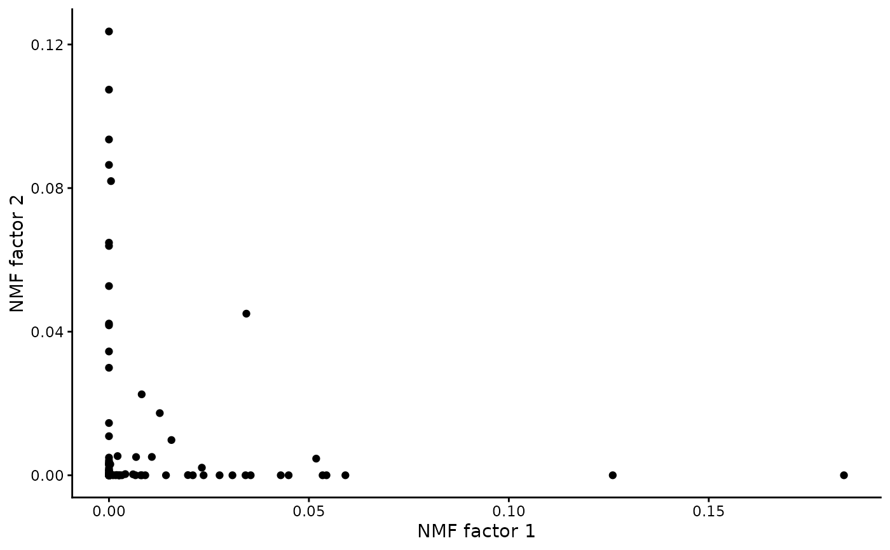

Produces a biplot from the output of nmf
Arguments
- x
an object of class "
nmf"- factors
length 2 vector specifying factors to plot.
- matrix
either
worh- group_by
a discrete factor giving groupings for samples or features. Must be of the same length as number of samples in
object$hor number of features inobject$w.- ...
for consistency with
biplotgeneric
Examples
# \donttest{
library(Matrix)
A <- rsparsematrix(100, 50, 0.1)
model <- nmf(A, k = 3, seed = 42, tol = 1e-2, maxit = 10)
if (requireNamespace("ggplot2", quietly = TRUE)) {
biplot(model, factors = c(1, 2))
}

# }